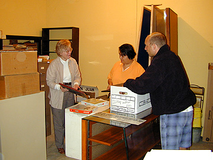

Project team members include Theodore Richter, Margarita Gonzales, Carolina Sordia, and Vahina Boudouani.

Professor Ruben Mendoza is the project advisor and director of the Museum Education Project. He may be reached at 831-582-3760, or by E-mail at ruben_mendoza@monterey.edu.

Society Archivist and Charter Member of the
San Juan Bautista Historical Society, Georgiana Gularte, is providing project
direction and leadership in the development of the new SJBHS Online Museum.
Here, Georgiana provides an orientation to two of the Museum Education
Project students during an initial visit to the SJBHS archive.
See "Digitising History: A Guide to Creating
Digital Resources from Historical Documents"
http://hds.essex.ac.uk/g2gp/digitising_history/index.html